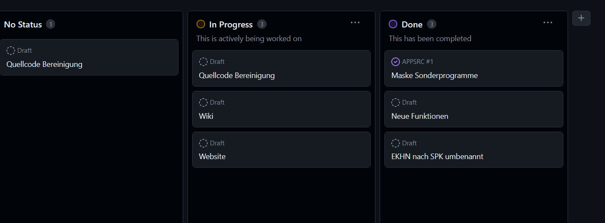

Die ChangeLog Dateien stehen auf dem T-Online Server
Laufende Projekte

Changelog 2024
Änderungen
KontoInh DB erweitert um Feld "Aktiv / Passiv" alle Masken angepasst Im Tagesabschluss Button zum updaten der Inhaber eingefügt
Änderungen
Sonder-Programme hinzugefügt (siehe Beschreibungen und Changelog) Maske Archivaktivieren.vw entfernt (wird seit 1 Jahr besser gelöst) Git auf diesem Rechner = HP Xeon neu eingerichtet Teilweise unnötige Dateien gelöscht bzw. verschoben \INC \PKG usw. Als Version Clear auf GitHub gespeichert
Änderungen
Buchungsmasken Info hinzugefügt Dieser Punkt beinhaltet alles relevante, was beim Tagesabschluss angesprochen wird. 6 Ansichten und Hilfe Splitt von AktivPassiv.txt bzw. von jeder Text oder csv Datei "CONTAINS" Masken JahresAbschluss angepasst Button Aktiv/Passiv für Kontoinhaber eingefügt 14.04.2024 Im Tagesabschluss 2 x cWebView2Browser eingefügt zur Anzeige Laufwerk M: (FiBu im RZ)
und diverse Änderungen siehe QuellCode oder GitHub